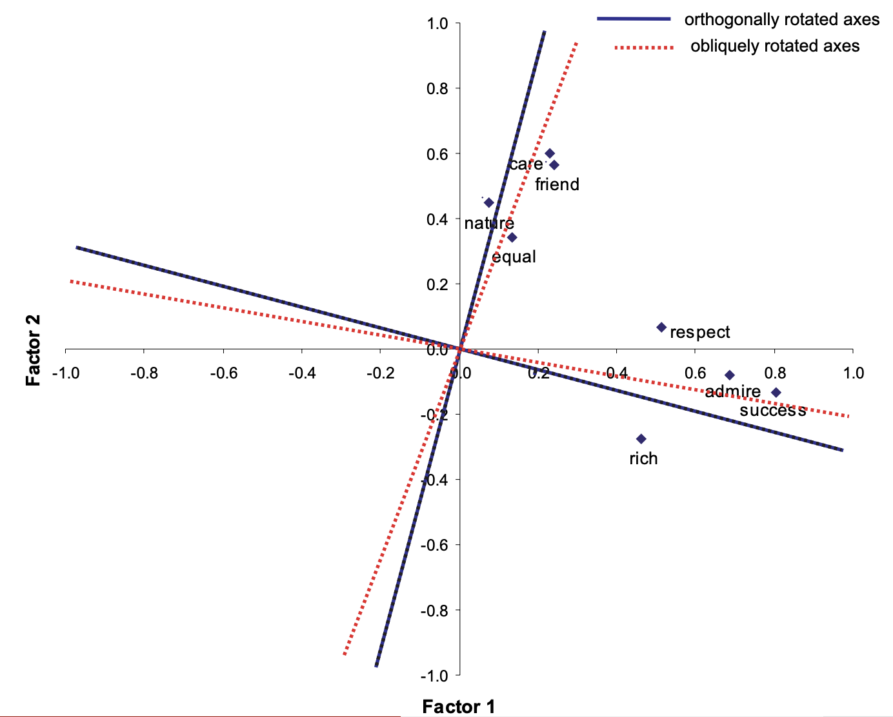
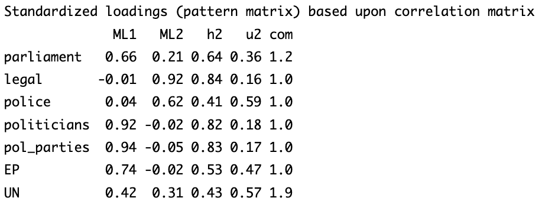

Factor Analysis Model
See here for an overview of latent variable models, and the other models available.
Factor analysis assumes that the unobserved latent factor is continuous and distributed \(F \sim \mathcal N(0, 1)\). We assume the items \(X_1, X_2, \dots\) are normally distributed.
Technically, we don’t need \(F\) to be strictly a standard normal. See appendix D.
We assume each observed item \(X_1, X_2, \dots\) is related to the factor with a linear model:
\[ \begin{align} X_1 & = \tau_1 + \lambda_1F + \delta_1 & \delta_1 \sim \mathcal N(0, \theta_{11})\\ X_2 & = \tau_2 + \lambda_2 F + \delta_2 & \delta_2 \sim \mathcal N(0, \theta_{22}) \end{align} \]
Factor loadings \(\lambda_1, \lambda_2, \dots\) are the covariance between \(X_1, X_2, \dots\) and the factor \(F\). If \(X_1, X_2, \dots\) are standardised to a standard normal, then \(\lambda_1, \lambda_2, \dots\) are also the correlation coefficient.
Factor analysis also works with multiple factors \(F_1, F_2, \dots\). Each item \(X_1, X_2, \dots\) could measure all factors, or only some. Factors can also be correlated with each other. For multiple factors, the measurement model now relates each item to all factors:
\[ \begin{align} X_1 & = \tau_1 + \lambda_{11}F_1 + \lambda_{12}F_2 + \dots + \delta_1 & \delta_1 \sim \mathcal N(0, \theta_{11})\\ X_2 & = \tau_2 + \lambda_{21} F_1 + \lambda_{22}F_2 + \dots +\delta_2 & \delta_2 \sim \mathcal N(0, \theta_{22}) \end{align} \]
The model not only estimates each \(\lambda\), but also the covariance between factors. When dealing with multiple factors, there are actually many different possible results, that involve rotation (see appendix A).
Interpretation of a factor \(F\), is based on the factor loadings \(\lambda\). A larger (absolute value) factor loading from one item indicates stronger “measurement” influence of a item by that factor. A closer to 0 loading means the factor does not measure that item. The sign of the factor describes the direction of the relationship.
see appendix B for an example of interpretation.
We can also create factor scores for each individual in our model. These are linear combinations of the items with weights.
\[ \widetilde F = w_0 + w_1 X_1 + w_2X_2 + \dots \]
The weights \(w_1, w_2, \dots\) are for each item \(X_1, X_2, \dots\) when creating the factor scores (see appendix C).
To implement factor analysis, we will need the psych and GPArotation package:
library(psych)
library(GPArotation)First, we should get rid of missing observations:
all.obs <- apply(my_data, 1, FUN=function(x){all(!is.na(x))})
dta <- my_data[all.obs,]For factor analysis with one factor, we use the syntax:
fa <- fa(data[,items], nfactors=1, fm="ml")
print(fa1)see appendix B for an interpretation example.
For factor analysis with multiple factors, we use the syntax:
fa <- fa(data[,items], nfactors=2, fm="ml", rotate="oblimin")
print(fa)This is the code for an oblique rotation. For an orthogonal rotation (don’t use unless your goal is dimensional reduction), change “oblimin” to “none”.
To access factor scores, use the code:
fa$scoresWe can use these factor scores in other statistical models.
Appendix
Appendix A: Details on Factor Rotation
There are two types of rotation of factors.
Orthogonal rotations basically assume that there is no correlation between the factors (they are perpendicular in vector space). This is good for dimensional reduction.
Oblique rotations allow for correlation between factors. This is good for interpretation, as they get some loadings close to 0, allowing for easier interpretation of a factor.
Below is a figure showing the difference between the two with 2 factors.

Appendix B: Interpretation Example
This is a typical output of factor anlaysis. ML1 and ML2 are the two factors, and the rows are items (which are trust in different institutions).

For factor 1 (ML1), we can see that pol_parties, politicians have very large loadings. EP, parliament, and UN have moderate loadings. Police and legal have almost 0 loadings. Almost all loadings are positive.
This tells us that factor 1 is a latent variable that measures mostly trust in politicians, rather than the legal/policing system. Since the loadings are almost all positive, we can conclude that higher values of factor 1 mean higher levels of trust in legal/policing systems.
For factor 2, we see that legal and police have the highest loadings, UN and parliament next, and the rest having very low loadings. These are positive loadings mostly.
We might interpret this as higher values of factor 2 mean higher trust in institutions, rather than political actors, since the high loadings are with mostly institutions, while politicians and pol_parties are very close to 0.
Appendix C: Weights, Communality, and Reliability
Before we discuss the weights, let us define some concepts about the factor scores.
Recall that for each item, \(\lambda\) is a loading, and \(\theta\) is the variance of the error term in the model.
- \(\lambda^2\) is known as the communality - the variance in the item explained by the factor.
- \(\theta\) is known as the residual variance or specific variance.
- The proportion \(\lambda^2 / (\lambda^2 + \theta)\) is the reliability of the item.
In factor scores, the items with the highest weights have the highest communalities.
Appendix D: Factor Distribution Assumption
The factors \(F\) are required to be normally distributed:
\[ F \sim \mathcal N(\kappa, \phi) \]
Where \(\kappa\) is the mean, and \(\phi\) is the variance.
However, this specification means there is actually no unique solution to \(\lambda\) estimates. This is an identification issue. Thus, we have to make further assumptions.
The most common assumption is to make the factor a standard normal \(F \sim \mathcal N(0, 1)\), as we introduced above.
However, instead of fixing the scale of the factor, we could also keep the factor flexible (allowing the model to estimate \(\kappa\) and \(\phi\)), and fix one item \(X_1\)’s model as:
\[ X_1 = 0 + 1F + \delta_1 \]
Where the intercept \(\tau_1\) is fixed at 0, and the \(\lambda_1\) is fixed at 1. This is less common.